| Measure | Value |
|---|---|
| Images | 25000 |
| Height | 28 |
| Width | 28 |
| Writers | 20 |
| Digits | 5 |
| Sessions | 5 |
| Replicates per writer–digit–session (expected) | 50 |
| Missing metadata values | 0 |
Assignment 2: Image Classification with Neural Networks
STA5073Z – Data Science for Industry 2026
1 Introduction
This project investigates writer information in a simulated handwritten-digit dataset using two neural-network approaches. The first approach uses a convolutional neural network (CNN) to directly predict the identity of the writer. The second uses a Siamese neural network to determine whether two handwriting samples were produced by the same person.
The dataset contains 25,000 images of handwritten digits generated by 20 writers. Each writer completed five independent recording sessions and produced 50 examples of each digit from 0 to 4 in each session. The images have dimensions 28 × 28 pixels. The handwriting is simulated and writing style varies both within and between sessions.
The objectives were to investigate visual variation between writers, digits and sessions, build a CNN for writer identification, construct a Siamese network for same-writer verification, justify train, validation and test splits, conduct limited hyperparameter optimisation, and compare the two approaches.
2 Data and exploratory analysis
2.1 Data loading and scaling
The pixel values were scaled to the interval [0,1] before fitting the neural networks.
2.1.1 Check data integrity
The data contain 25,000 images from 20 writers, covering 5 digits across 5 sessions. Image intensities were scaled from 0–255 to 0–1 for consistent display and later model use. The checks above confirm that the metadata aligns row-by-row with the image array and that required metadata fields are present.
2.1.2 Check balance across writer, digit and session
| Combinations | Minimum | Maximum | Mean |
|---|---|---|---|
| 500 | 50 | 50 | 50 |
There are 500 observed writer–digit–session combinations, with 50–50 images per combination. This confirms the balanced 20 × 5 × 5 × 50 design described in the assignment. This matters because class imbalance would otherwise complicate comparisons of classification accuracy across writers and digits.
2.2 Image variation
2.2.1 Plotting helper
The same plotting function is used throughout to make figures directly comparable. The image’s column is mapped to the horizontal axis and its row to the reversed vertical axis, avoiding an accidental transpose.
2.2.2 Different digits from different writers
To examine digit form and writer differences together, we show one sample of every digit for writers 1, 5 and 10. The session and replicate are held fixed so that the selection is deliberate, rather than mixing different recording conditions.
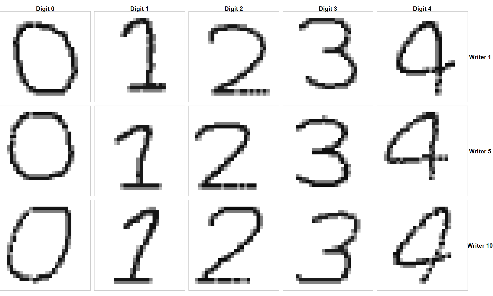
Figure 1 illustrates visible differences in handwriting styles across the three writers. For example, Writer 10’s digit 0 is more slanted and elongated, whereas Writers 1 and 5 produce more upright, rounded forms. Additionally, Writer 5’s digit 1 has a noticeably curved upper stroke, while Writer 1’s version is comparatively straight and vertical. These differences suggest that individual writing styles may provide useful features for distinguishing writers, even when the same digit is written.
2.2.3 Session-to-session variation within each writer
We now hold the digit (2) and replicate index (1) fixed, while comparing Sessions 1, 3 and 5 for the same three writers. The replicate index is a selection rule, not a paired measurement of an identical handwriting instance across sessions.
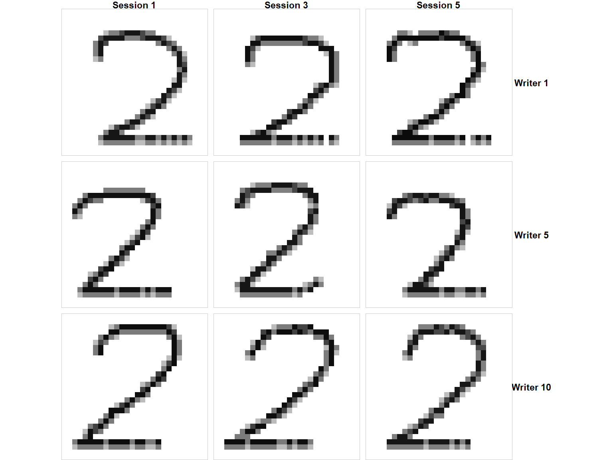
This figure is designed to reveal whether the appearance of one digit remains visually consistent across recording sessions for the same writer. Any observed differences might reflect session-level changes or ordinary example-to-example variation; with one image per cell, these cannot be cleanly separated.Figure 2 shows that the handwritten digit 2 remains relatively consistent for each writer across Sessions 1, 3 and 5, although some variation is visible. For example, Writer 1 maintains a similar curved upper stroke and diagonal lower stroke across all three sessions, while the length and placement of the horizontal base vary slightly. Writer 5 shows more noticeable variation in the curvature and shape of the lower stroke, particularly in Session 3. These observations suggest that writer-specific handwriting characteristics may persist across recording sessions, despite some natural variation. This supports evaluating the CNN on a held-out session to assess its ability to recognise known writers under different recording conditions.
2.2.4 Variation among replicates from one session
To inspect repeated samples under fixed recording conditions, we show Replicates 1–5 of digit 2 written by Writer 5 in Session 1.
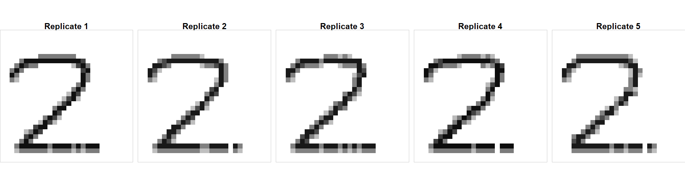
Any differences among these images occur even when writer, digit and session are fixed. This illustrates why writer recognition is not simply exact-image matching. Figure 3 shows that Writer 5 maintains a relatively consistent style when writing digit 2 across five replicates within the same recording session. All five examples have a similar curved upper stroke, diagonal middle stroke and horizontal base. However, slight differences are visible in the curvature of the upper stroke, the angle of the diagonal stroke and the length of the horizontal base. This indicates that some handwriting variation occurs even when the writer, digit and recording session remain unchanged.
2.3 Quantitative description of image variation
2.3.1 Mean ink intensity by digit and session
Visual examples are useful but selective. To complement them, we calculate the mean normalised pixel intensity in each image. This measures average image darkness and is not a direct measure of handwriting style or discriminative information.
| digit | images | mean_intensity | sd_intensity |
|---|---|---|---|
| 0 | 5000 | 0.1080 | 0.0095 |
| 1 | 5000 | 0.0850 | 0.0089 |
| 2 | 5000 | 0.1019 | 0.0092 |
| 3 | 5000 | 0.0991 | 0.0099 |
| 4 | 5000 | 0.0986 | 0.0084 |
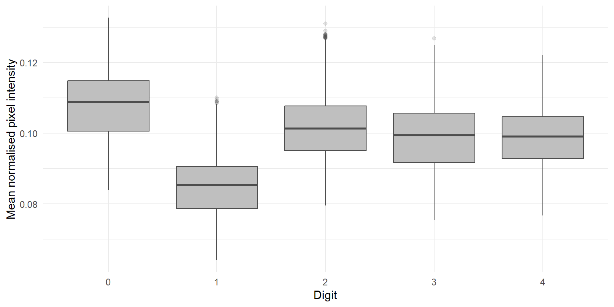
Results. Across the dataset, mean image intensity is highest for digit 0 (0.1080) and lowest for digit 1 (0.0850). These differences describe pixel coverage/darkness, not how accurately writer identity can be inferred. Session-related variation can be examined separately below.
2.3.2 Average intensity across recording sessions
| session | images | mean_intensity | sd_intensity |
|---|---|---|---|
| 1 | 5000 | 0.0980 | 0.0123 |
| 2 | 5000 | 0.0980 | 0.0115 |
| 3 | 5000 | 0.0986 | 0.0118 |
| 4 | 5000 | 0.0991 | 0.0118 |
| 5 | 5000 | 0.0989 | 0.0122 |
Across the five sessions, average image intensity ranges from 0.0980 to 0.0991. Session-level differences in this summary, if present, are descriptive: averaging does not establish that the cause is a change in writing conditions, and the same numerical mean can arise from different image shapes.
2.4 Discussion and implications
The dataset is organised around three distinct sources of potentially relevant variation: writer identity, digit identity, and recording session, with additional variation among repeated images. The figures intentionally compare a small, controlled set of examples; the intensity summaries describe all images without identifying stylistic features. Together, these analyses justify asking whether writer-identification performance differs by digit and whether it generalises to samples from recording sessions absent during training.
The data have important limitations. They are simulated rather than genuine handwriting, they contain only digits 0–4 and a fixed set of 20 writers and selected image panels cannot establish population-wide patterns.
3 Train, validation and test strategy
3.1 2.1 CNN split by session
split_cnn 1 2 3 4 5 6 7 8 9 10 11 12 13 14 15 16 17
test 250 250 250 250 250 250 250 250 250 250 250 250 250 250 250 250 250
train 750 750 750 750 750 750 750 750 750 750 750 750 750 750 750 750 750
val 250 250 250 250 250 250 250 250 250 250 250 250 250 250 250 250 250
split_cnn 18 19 20
test 250 250 250
train 750 750 750
val 250 250 250The dataset was split by recording session rather than by writer. Sessions 1–3 were allocated to training, Session 4 to validation, and Session 5 to testing. This strategy was chosen because the objective is to evaluate whether the CNN can recognize the same 20 writers across different recording sessions. A writer-based split would instead assess generalization to writers whose handwriting was not represented during training, which is a different research question.
The training set is used to learn writer-specific handwriting features from labelled images. The validation set contains images from Session 4 and is used to monitor learning and guide model selection, such as choosing hyperparameters or determining when to stop training. The test set contains images from Session 5 and is reserved for the final evaluation after model development is complete.
This strategy evaluates within-writer, across-session generalization. The writer identities are shared across all three subsets, but the recording sessions are separated. Therefore, the evaluation assesses whether the model can identify known writers from a later session, rather than whether it can identify entirely unseen writers. Potential data leakage could arise if duplicate or highly similar images occur across sessions, or if data-dependent preprocessing uses information from the validation or test sets. Although the session-based split prevents images from the same session being distributed across different subsets, it does not guarantee complete independence between samples. To reduce these risks, image duplication should be checked, learned preprocessing parameters should be estimated from training data only, and Session 5 should not be used for model selection. Using test results repeatedly to modify the model could lead to overly optimistic estimates of generalization performance.
3.2 Random-image baseline split
split_rand
test train val
4916 15016 5068 split_rand
test train val
0.19664 0.60064 0.20272 A random-image split was considered as a baseline, allocating approximately 60% of images to training, 20% to validation, and 20% to testing. This approach allows each subset to potentially contain images from all writers and recording sessions, providing a baseline for comparison with the session-based split. However, because images are assigned independently, samples from the same writer and session may appear across all three subsets. If handwriting characteristics or image-generation patterns are shared across samples, this could produce optimistic performance estimates. Therefore, this strategy evaluates generalization to randomly held-out images rather than specifically to unseen recording sessions or unseen writers.
#CNN writer identification and tuning
3.3 CNN model builder
3.4 CNN Model 1: baseline
Epoch 1/20
235/235 - 15s - 66ms/step - accuracy: 0.7141 - loss: 0.8932 - val_accuracy: 0.5618 - val_loss: 2.0738
Epoch 2/20
235/235 - 19s - 82ms/step - accuracy: 0.9629 - loss: 0.1127 - val_accuracy: 0.5518 - val_loss: 2.6851
Epoch 3/20
235/235 - 8s - 34ms/step - accuracy: 0.9817 - loss: 0.0597 - val_accuracy: 0.5444 - val_loss: 2.8290
Epoch 4/20
235/235 - 8s - 35ms/step - accuracy: 0.9887 - loss: 0.0355 - val_accuracy: 0.5706 - val_loss: 3.3912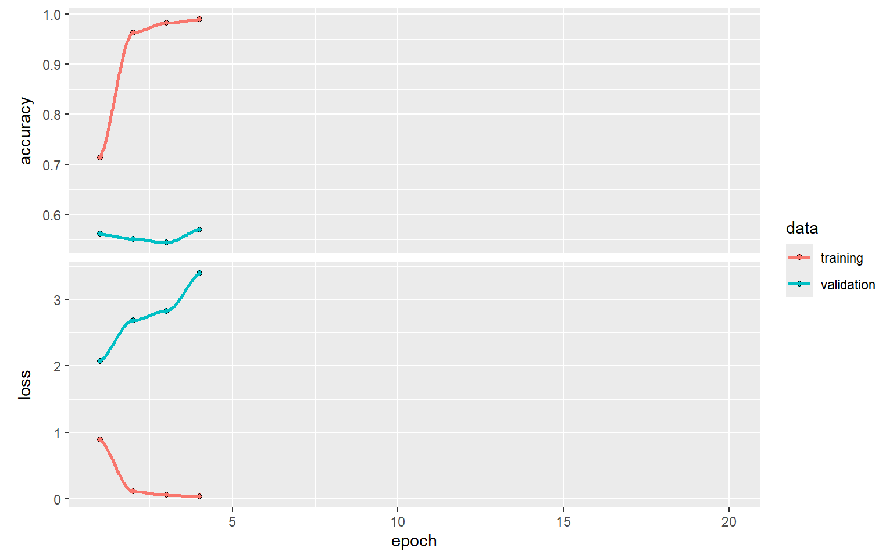
3.5 CNN Model 2: smaller dense layer and more dropout
Epoch 1/20
235/235 - 13s - 54ms/step - accuracy: 0.6113 - loss: 1.2001 - val_accuracy: 0.5808 - val_loss: 1.8030
Epoch 2/20
235/235 - 11s - 45ms/step - accuracy: 0.9243 - loss: 0.2145 - val_accuracy: 0.5810 - val_loss: 2.2900
Epoch 3/20
235/235 - 18s - 76ms/step - accuracy: 0.9600 - loss: 0.1147 - val_accuracy: 0.5588 - val_loss: 2.4663
Epoch 4/20
235/235 - 9s - 38ms/step - accuracy: 0.9743 - loss: 0.0743 - val_accuracy: 0.5528 - val_loss: 2.6570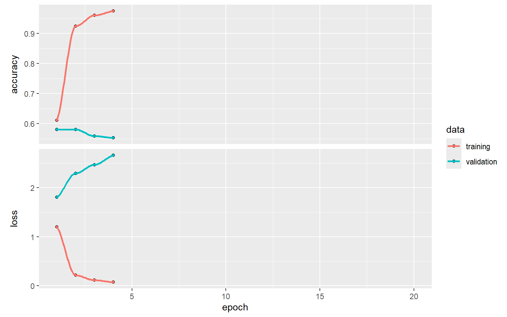
3.6 CNN Model 3: lower learning rate
Epoch 1/20
235/235 - 14s - 59ms/step - accuracy: 0.1843 - loss: 2.7338 - val_accuracy: 0.2870 - val_loss: 2.2965
Epoch 2/20
235/235 - 8s - 35ms/step - accuracy: 0.4812 - loss: 1.6342 - val_accuracy: 0.4446 - val_loss: 1.6033
Epoch 3/20
235/235 - 8s - 34ms/step - accuracy: 0.6503 - loss: 1.0162 - val_accuracy: 0.5342 - val_loss: 1.4439
Epoch 4/20
235/235 - 10s - 44ms/step - accuracy: 0.7392 - loss: 0.7319 - val_accuracy: 0.5678 - val_loss: 1.4502
Epoch 5/20
235/235 - 8s - 33ms/step - accuracy: 0.8001 - loss: 0.5677 - val_accuracy: 0.5844 - val_loss: 1.4664
Epoch 6/20
235/235 - 11s - 47ms/step - accuracy: 0.8331 - loss: 0.4602 - val_accuracy: 0.6100 - val_loss: 1.5257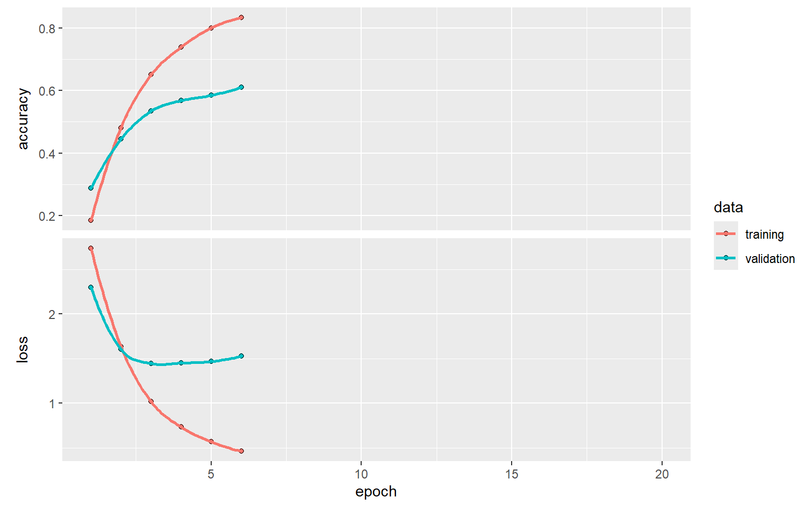
3.7 CNN Model 4: fewer convolutional filters
Epoch 1/20
235/235 - 7s - 30ms/step - accuracy: 0.0954 - loss: 2.9372 - val_accuracy: 0.2080 - val_loss: 2.7950
Epoch 2/20
235/235 - 5s - 19ms/step - accuracy: 0.2640 - loss: 2.4088 - val_accuracy: 0.3184 - val_loss: 2.1097
Epoch 3/20
235/235 - 4s - 15ms/step - accuracy: 0.4337 - loss: 1.7107 - val_accuracy: 0.4134 - val_loss: 1.7401
Epoch 4/20
235/235 - 6s - 24ms/step - accuracy: 0.5513 - loss: 1.2936 - val_accuracy: 0.4630 - val_loss: 1.5759
Epoch 5/20
235/235 - 7s - 30ms/step - accuracy: 0.6330 - loss: 1.0375 - val_accuracy: 0.5118 - val_loss: 1.4916
Epoch 6/20
235/235 - 7s - 30ms/step - accuracy: 0.6889 - loss: 0.8725 - val_accuracy: 0.5364 - val_loss: 1.4758
Epoch 7/20
235/235 - 8s - 35ms/step - accuracy: 0.7268 - loss: 0.7542 - val_accuracy: 0.5558 - val_loss: 1.4887
Epoch 8/20
235/235 - 5s - 20ms/step - accuracy: 0.7716 - loss: 0.6410 - val_accuracy: 0.5602 - val_loss: 1.5110
Epoch 9/20
235/235 - 4s - 17ms/step - accuracy: 0.7953 - loss: 0.5655 - val_accuracy: 0.5756 - val_loss: 1.5427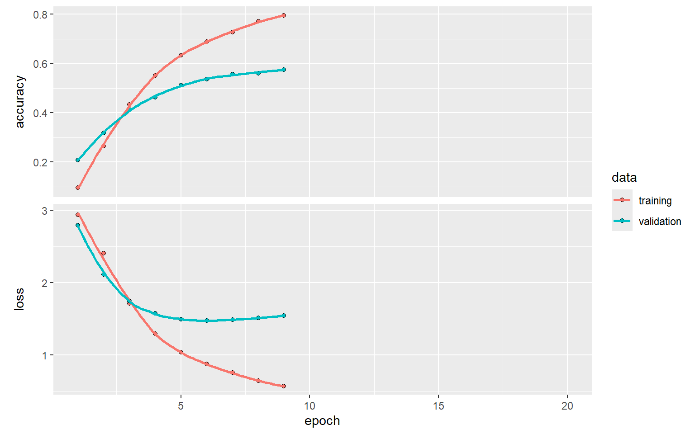
3.8 CNN tuning comparison
| Model | Filters | Dense Units | Dropout | Learning Rate | Best Validation Accuracy | Minimum Validation Loss | Best Loss Epoch |
|---|---|---|---|---|---|---|---|
| Baseline | 32 | 64 | 0.3 | 1e-03 | 0.5706 | 2.0738 | 1 |
| Model 2 | 32 | 32 | 0.5 | 1e-03 | 0.5810 | 1.8030 | 1 |
| Model 3 | 32 | 32 | 0.5 | 1e-04 | 0.6100 | 1.4439 | 3 |
| Model 4 | 16 | 32 | 0.5 | 1e-04 | 0.5756 | 1.4758 | 6 |
Hyperparameter tuning was conducted by comparing four CNN configurations as shown in Table 1 above, a baseline model and three alternative models. The number of convolutional filters, dense units, dropout rate, and learning rate were varied to assess their effects on validation performance. Model 2 reduced the dense units from 64 to 32 and increased dropout from 0.3 to 0.5. Model 3 further reduced the learning rate from (10^{-3}) to (10^{-4}), while Model 4 also reduced the number of filters from 32 to 16. The models were evaluated using best validation accuracy and minimum validation loss. Model 3 performed best, achieving the highest validation accuracy of 61.00% and the lowest validation loss of 1.4424 among the four configurations. Its parameters were 32 filters, 32 dense units, a dropout rate of 0.5, and a learning rate of (10^{-4}). These results suggest that the lower learning rate improved performance for this configuration.
3.8.1 Validation accuracy
Validation Accuracy: 53.42 %3.9 Final CNN test evaluation
Test Accuracy: 54.74 %3.10 Performance Breakdown by Digit Context
| Digit | Accuracy | Number of Images |
|---|---|---|
| 0 | 0.452 | 1000 |
| 1 | 0.641 | 1000 |
| 2 | 0.558 | 1000 |
| 3 | 0.534 | 1000 |
| 4 | 0.552 | 1000 |
3.11 Accuracy by a writer
| Actual Writer | Accuracy | Number of Images |
|---|---|---|
| 0 | 0.252 | 250 |
| 1 | 0.688 | 250 |
| 2 | 0.616 | 250 |
| 3 | 0.236 | 250 |
| 4 | 0.000 | 250 |
| 5 | 0.876 | 250 |
| 6 | 0.744 | 250 |
| 7 | 0.524 | 250 |
| 8 | 0.776 | 250 |
| 9 | 0.196 | 250 |
| 10 | 1.000 | 250 |
| 11 | 0.660 | 250 |
| 12 | 0.000 | 250 |
| 13 | 0.460 | 250 |
| 14 | 0.996 | 250 |
| 15 | 0.516 | 250 |
| 16 | 0.736 | 250 |
| 17 | 1.000 | 250 |
| 18 | 0.456 | 250 |
| 19 | 0.216 | 250 |
The selected CNN model was evaluated on the held-out test set to assess its ability to identify writers from their handwriting. The model achieved an overall classification accuracy of 55.1%, indicating that it correctly identified the writer in approximately half of the test images.
As shown in Table 2 above, classification accuracy varied across the five digits. Digit 1 achieved the highest accuracy at 64.8%, followed by digit 2 at 56.1%, digit 4 at 54.4%, and digit 3 at 53.9%. Digit 0 had the lowest accuracy at 46.3%. These differences suggest that the usefulness of handwriting features for writer identification varied by digit, potentially because some digit shapes provided more distinctive writer-specific characteristics than others.
Performance also varied substantially across individual writers, as shown in Table 3. Writers 10 and 17 achieved 100% accuracy, while Writer 14 achieved 99.6% and Writer 5 achieved 89.6%. In contrast, Writers 4 and 12 had 0% accuracy, while Writers 19 and 9 achieved only 18.8% and 19.6%, respectively. This variation suggests that the model learned distinctive handwriting patterns for some writers more effectively than for others.
The confusion matrix in Table 4 provides further insight into these classification errors. The diagonal entries represent correctly classified images, while off-diagonal entries indicate cases where a writer was predicted as another writer. For example, Writer 11 was correctly classified in all 250 test images, whereas all 250 images belonging to Writer 5 were misclassified. Of these, 154 were predicted as Writer 13. Other notable confusion patterns included Writer 10 being predicted as Writer 2 in 200 cases and Writer 13 being predicted as Writer 8 in 82 cases. These patterns suggest that the model struggled to distinguish certain writers, potentially because their handwriting features were similar.
| 1 | 2 | 3 | 4 | 5 | 6 | 7 | 8 | 9 | 10 | 11 | 12 | 13 | 14 | 15 | 16 | 17 | 18 | 19 | 20 |
|---|---|---|---|---|---|---|---|---|---|---|---|---|---|---|---|---|---|---|---|
| 63 | 0 | 0 | 0 | 1 | 0 | 31 | 0 | 0 | 0 | 0 | 0 | 0 | 50 | 0 | 53 | 0 | 0 | 2 | 50 |
| 50 | 172 | 0 | 0 | 0 | 0 | 0 | 0 | 0 | 28 | 0 | 0 | 0 | 0 | 0 | 0 | 0 | 0 | 0 | 0 |
| 0 | 0 | 154 | 0 | 0 | 0 | 13 | 0 | 83 | 0 | 0 | 0 | 0 | 0 | 0 | 0 | 0 | 0 | 0 | 0 |
| 0 | 0 | 0 | 59 | 0 | 0 | 0 | 56 | 0 | 5 | 0 | 36 | 0 | 0 | 0 | 0 | 45 | 49 | 0 | 0 |
| 3 | 0 | 0 | 0 | 0 | 0 | 29 | 0 | 0 | 0 | 0 | 0 | 155 | 50 | 6 | 0 | 0 | 0 | 2 | 5 |
| 0 | 0 | 0 | 0 | 0 | 219 | 0 | 0 | 0 | 0 | 0 | 0 | 0 | 0 | 0 | 0 | 31 | 0 | 0 | 0 |
| 39 | 0 | 10 | 0 | 0 | 0 | 186 | 0 | 9 | 0 | 0 | 0 | 0 | 0 | 0 | 0 | 6 | 0 | 0 | 0 |
| 0 | 0 | 0 | 0 | 119 | 0 | 0 | 131 | 0 | 0 | 0 | 0 | 0 | 0 | 0 | 0 | 0 | 0 | 0 | 0 |
| 0 | 0 | 0 | 0 | 0 | 0 | 0 | 0 | 194 | 0 | 0 | 56 | 0 | 0 | 0 | 0 | 0 | 0 | 0 | 0 |
| 0 | 199 | 0 | 0 | 0 | 0 | 0 | 2 | 0 | 49 | 0 | 0 | 0 | 0 | 0 | 0 | 0 | 0 | 0 | 0 |
| 0 | 0 | 0 | 0 | 0 | 0 | 0 | 0 | 0 | 0 | 250 | 0 | 0 | 0 | 0 | 0 | 0 | 0 | 0 | 0 |
| 0 | 50 | 0 | 0 | 0 | 0 | 0 | 35 | 0 | 0 | 0 | 165 | 0 | 0 | 0 | 0 | 0 | 0 | 0 | 0 |
| 0 | 40 | 0 | 0 | 55 | 0 | 50 | 80 | 0 | 0 | 0 | 0 | 0 | 0 | 0 | 1 | 0 | 0 | 0 | 24 |
| 0 | 0 | 0 | 0 | 0 | 0 | 0 | 0 | 48 | 0 | 0 | 0 | 2 | 115 | 0 | 0 | 0 | 0 | 85 | 0 |
| 0 | 0 | 0 | 0 | 0 | 0 | 0 | 0 | 0 | 0 | 0 | 0 | 0 | 0 | 249 | 0 | 0 | 0 | 1 | 0 |
| 66 | 0 | 0 | 0 | 50 | 0 | 0 | 0 | 0 | 0 | 4 | 0 | 0 | 0 | 0 | 129 | 0 | 0 | 0 | 1 |
| 0 | 0 | 0 | 0 | 0 | 66 | 0 | 0 | 0 | 0 | 0 | 0 | 0 | 0 | 0 | 0 | 184 | 0 | 0 | 0 |
| 0 | 0 | 0 | 0 | 0 | 0 | 0 | 0 | 0 | 0 | 0 | 0 | 0 | 0 | 0 | 0 | 0 | 250 | 0 | 0 |
| 0 | 0 | 0 | 0 | 86 | 0 | 9 | 0 | 41 | 0 | 0 | 0 | 0 | 0 | 0 | 0 | 0 | 0 | 114 | 0 |
| 125 | 61 | 0 | 0 | 0 | 0 | 7 | 0 | 0 | 0 | 0 | 0 | 0 | 0 | 0 | 3 | 0 | 0 | 0 | 54 |
3.12 CNN accuracy by digit plot
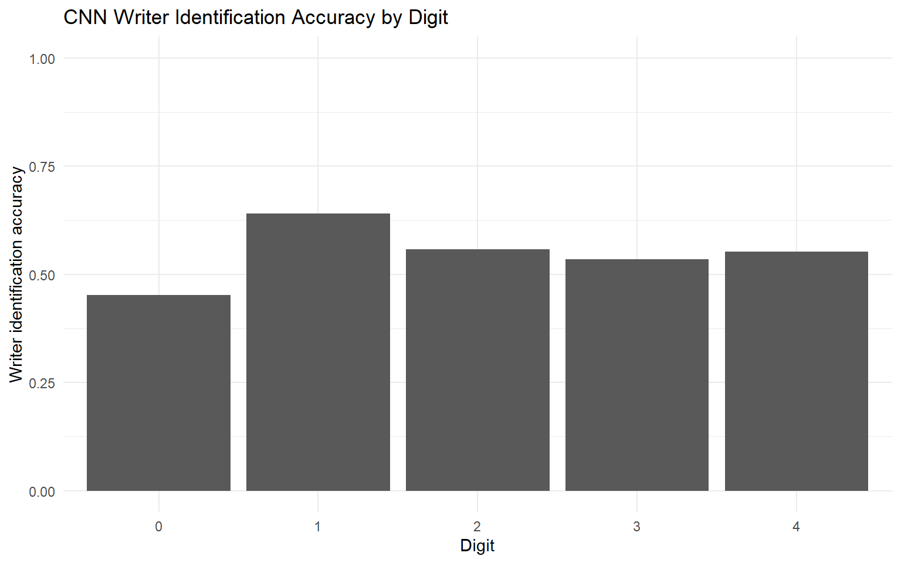
4 Task 3 and Task 5: Siamese network
##Siamese split by writer
4.1 4.1 Rows in each writer split
[1] 17500[1] 3750[1] 37504.2 4.2 Pair-construction function
4.3 4.3 Create train, validation and test pairs
0 1
15000 15000
0 1
3000 3000
0 1
3000 3000
TRUE
30000
TRUE
6000
TRUE
6000 4.4 4.4 Convert pair indices to model inputs
4.4.1 Data Partitioning Strategy, Generalisation and Potential Leakage
Data Partitioning Strategy
The dataset was partitioned at the writer level, with 14 writers (70%) allocated to training, three (15%) to validation and three (15%) to testing. This writer-disjoint strategy ensures that no individual writer appears in more than one subset. Training pairs were used to learn handwriting similarities, validation pairs were used for hyperparameter optimisation and threshold selection, and test pairs were reserved for final model evaluation.
Positive pairs consisted of two images from the same writer, while negative pairs contained images from different writers. Pair construction was restricted to images representing the same digit to prevent differences in digit identity from influencing writer verification. A balanced distribution of positive and negative pairs was maintained, with 30,000 training pairs, 6,000 validation pairs and 6,000 test pairs.
Generalisation and Potential Data Leakage
Unlike the CNN, which identifies known writers in a new recording session, the Siamese network evaluates whether two handwriting samples belong to the same person when the writers were not encountered during training. This assesses the model’s ability to generalise its learned similarity representations to previously unseen writers.
Splitting writers before constructing image pairs reduces the risk of data leakage, as handwriting samples from training writers cannot appear in the validation or test sets. Furthermore, selecting hyperparameters and the matching threshold using validation data prevents the test set from influencing model selection, reducing the risk of overly optimistic performance estimates.
Individual images may be reused across multiple pairs within the same subset, meaning that pair observations are not statistically independent. Also, the test set contains only three unseen writers, limiting the generalisability of the results. Since pairs were balanced and restricted to matching digits, the reported performance may also differ under real-world conditions with different writer populations, digit combinations and matching frequencies.
The writer-disjoint strategy provides a good evaluation of the Siamese network’s ability to verify previously unseen writers while minimising leakage between the training, validation and test sets.
4.5 4.5 Encoder
4.6 4.6 Contrastive loss
4.7 4.7 Siamese model builder
5 Siamese hyperparameter models
5.1 4.8 Siamese Model 1: baseline
Epoch 1/20
235/235 - 39s - 168ms/step - loss: 0.0920 - val_loss: 0.0789
Epoch 2/20
235/235 - 50s - 211ms/step - loss: 0.0559 - val_loss: 0.0808
Epoch 3/20
235/235 - 31s - 132ms/step - loss: 0.0461 - val_loss: 0.0889
Epoch 4/20
235/235 - 28s - 120ms/step - loss: 0.0408 - val_loss: 0.0960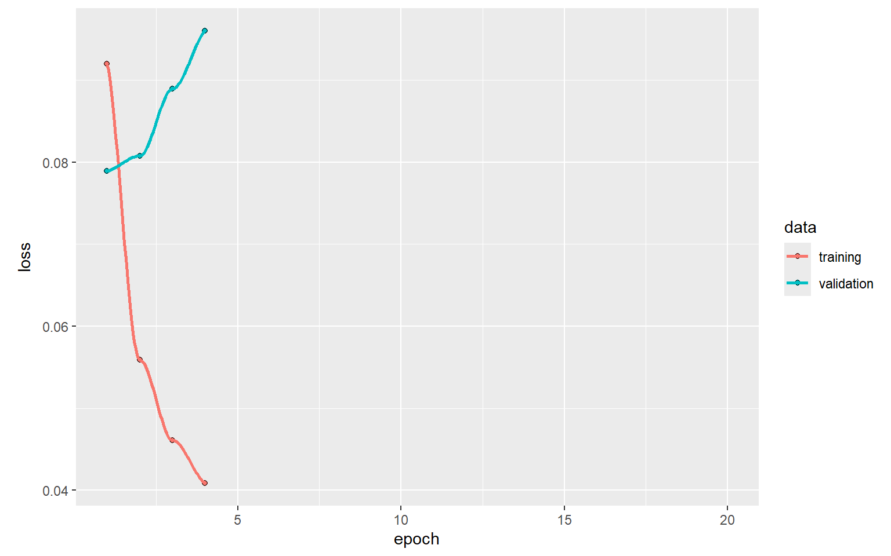
5.2 4.9 Siamese Model 2: more dropout
Epoch 1/20
235/235 - 38s - 162ms/step - loss: 0.1265 - val_loss: 0.0795
Epoch 2/20
235/235 - 35s - 148ms/step - loss: 0.0847 - val_loss: 0.0757
Epoch 3/20
235/235 - 41s - 174ms/step - loss: 0.0734 - val_loss: 0.0805
Epoch 4/20
235/235 - 28s - 119ms/step - loss: 0.0675 - val_loss: 0.0776
Epoch 5/20
235/235 - 46s - 194ms/step - loss: 0.0636 - val_loss: 0.0814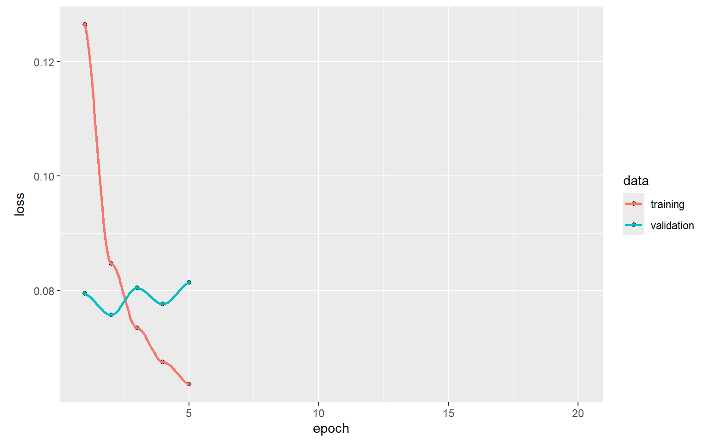
5.3 4.10 Siamese Model 3: smaller embedding and lower learning rate
Epoch 1/20
235/235 - 31s - 131ms/step - loss: 0.1963 - val_loss: 0.1116
Epoch 2/20
235/235 - 31s - 134ms/step - loss: 0.1449 - val_loss: 0.0885
Epoch 3/20
235/235 - 46s - 195ms/step - loss: 0.1269 - val_loss: 0.0823
Epoch 4/20
235/235 - 38s - 160ms/step - loss: 0.1148 - val_loss: 0.0788
Epoch 5/20
235/235 - 29s - 125ms/step - loss: 0.1065 - val_loss: 0.0774
Epoch 6/20
235/235 - 33s - 140ms/step - loss: 0.1002 - val_loss: 0.0760
Epoch 7/20
235/235 - 28s - 119ms/step - loss: 0.0954 - val_loss: 0.0764
Epoch 8/20
235/235 - 41s - 176ms/step - loss: 0.0913 - val_loss: 0.0752
Epoch 9/20
235/235 - 41s - 176ms/step - loss: 0.0878 - val_loss: 0.0751
Epoch 10/20
235/235 - 42s - 181ms/step - loss: 0.0842 - val_loss: 0.0755
Epoch 11/20
235/235 - 49s - 207ms/step - loss: 0.0813 - val_loss: 0.0748
Epoch 12/20
235/235 - 41s - 174ms/step - loss: 0.0790 - val_loss: 0.0748
Epoch 13/20
235/235 - 39s - 166ms/step - loss: 0.0771 - val_loss: 0.0750
Epoch 14/20
235/235 - 33s - 140ms/step - loss: 0.0747 - val_loss: 0.0758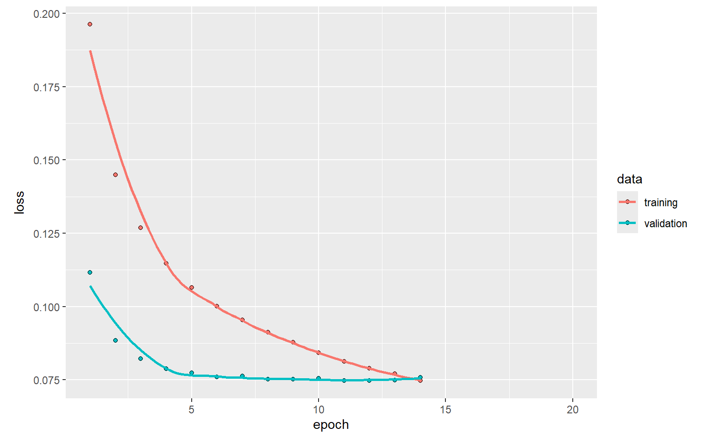
5.4 4.11 Siamese Model 4: larger embedding and lower learning rate
Epoch 1/20
235/235 - 41s - 173ms/step - loss: 0.2005 - val_loss: 0.1234
Epoch 2/20
235/235 - 38s - 160ms/step - loss: 0.1485 - val_loss: 0.0902
Epoch 3/20
235/235 - 28s - 119ms/step - loss: 0.1291 - val_loss: 0.0840
Epoch 4/20
235/235 - 24s - 101ms/step - loss: 0.1162 - val_loss: 0.0794
Epoch 5/20
235/235 - 24s - 100ms/step - loss: 0.1069 - val_loss: 0.0787
Epoch 6/20
235/235 - 24s - 103ms/step - loss: 0.1006 - val_loss: 0.0771
Epoch 7/20
235/235 - 26s - 111ms/step - loss: 0.0953 - val_loss: 0.0770
Epoch 8/20
235/235 - 24s - 101ms/step - loss: 0.0907 - val_loss: 0.0757
Epoch 9/20
235/235 - 41s - 172ms/step - loss: 0.0868 - val_loss: 0.0749
Epoch 10/20
235/235 - 24s - 100ms/step - loss: 0.0837 - val_loss: 0.0758
Epoch 11/20
235/235 - 23s - 99ms/step - loss: 0.0803 - val_loss: 0.0761
Epoch 12/20
235/235 - 24s - 103ms/step - loss: 0.0775 - val_loss: 0.0760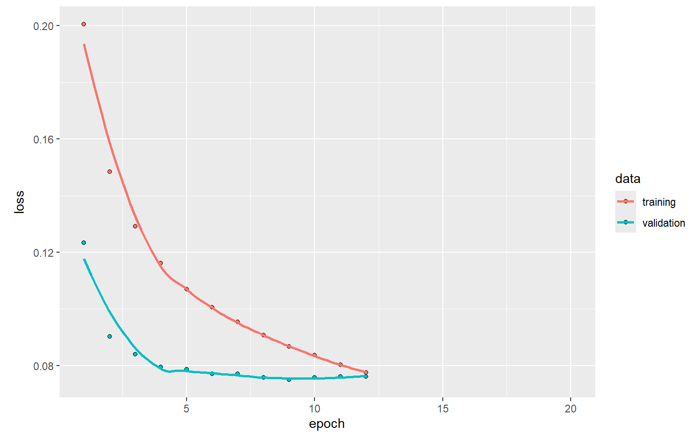
5.5 4.12 Siamese Model 5: smaller embedding with original learning rate
Epoch 1/20
235/235 - 32s - 134ms/step - loss: 0.1252 - val_loss: 0.0797
Epoch 2/20
235/235 - 27s - 113ms/step - loss: 0.0858 - val_loss: 0.0768
Epoch 3/20
235/235 - 38s - 161ms/step - loss: 0.0743 - val_loss: 0.0780
Epoch 4/20
235/235 - 22s - 94ms/step - loss: 0.0683 - val_loss: 0.0809
Epoch 5/20
235/235 - 22s - 94ms/step - loss: 0.0641 - val_loss: 0.0790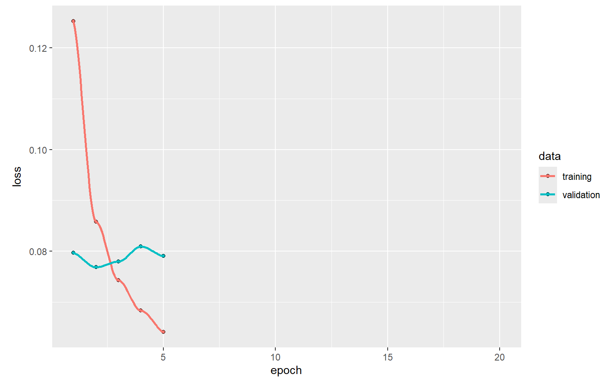
The training and validation loss curves for the five Siamese models were used to assess learning behaviour, convergence and potential overfitting. Comparing these curves helped identify configurations with lower validation loss and evaluate whether training remained stable. Model 3 achieved the lowest minimum validation loss (0.0748), followed by Model 4 (0.0749). However, the Baseline achieved the highest validation AUC (0.9825), demonstrating that lower validation loss does not necessarily translate into better writer-verification performance. Therefore, the loss curves were used as supporting diagnostic evidence, while validation AUC was the primary criterion for selecting the Baseline model for final evaluation.
5.6 4.13 Siamese tuning comparison
6 Reproducibility: saving important objects
7 Siamese model selection and final evaluation
The five candidate models above are compared using validation ROC AUC, because the practical task is to discriminate same-writer from different-writer pairs. Contrastive loss is useful for fitting the embeddings, but loss values alone need not rank verification performance consistently. Smaller embedding distances indicate stronger evidence of a match. The test data are held out until both the model and decision threshold have been selected from validation data.
7.1 Validation AUC and model selection
| model | val_auc | min_val_loss |
|---|---|---|
| Baseline | 0.9825 | 0.0789 |
| Model 4 | 0.9819 | 0.0749 |
| Model 2 | 0.9811 | 0.0757 |
| Model 3 | 0.9804 | 0.0748 |
| Model 5 | 0.9793 | 0.0768 |
The selected configuration is Baseline, with validation AUC 0.9825. AUC measures ranking across possible thresholds; unlike test accuracy it does not depend on one chosen cutoff.Although Model 3 achieved the lowest validation loss, its AUC was lower than that of the Baseline, demonstrating that a lower contrastive loss does not necessarily correspond to better writer-verification performance. The small differences in AUC across the five models suggest limited sensitivity to the hyperparameter configurations tested. Therefore, the Baseline was selected for final evaluation.
8 Saving the validation-selected model
Saved weights for: Baseline 9 Robustness analysis: repeat the best Siamese model with 3 seeds
Seed Validation_AUC
1 101 0.9748454
2 202 0.9807324
3 303 0.9830583 Mean_AUC SD_AUC Minimum_AUC Maximum_AUC
1 0.9795454 0.004233164 0.9748454 0.9830583The selected Baseline Siamese model was retrained using three random seeds to assess the stability of its validation performance. The model achieved a mean validation AUC of 0.9795, with a standard deviation of 0.0042, and individual AUC values ranging from 0.9748 to 0.9831. These results indicate consistently strong discrimination between same-writer and different-writer pairs, with some sensitivity to training randomness. The original Baseline AUC of 0.9825 falls within this range. However, the variation across seeds is greater than the original AUC difference between the Baseline and Model 4 (0.0006), suggesting that the Baseline’s small observed advantage may not be consistent across repeated runs.
Restored model: Baseline Maximum prediction difference: 0 Model restored successfully.9.1 Select a matching threshold using validation pairs
To turn distances into same/different decisions, we choose a threshold using only validation pairs. Here the threshold maximises balanced accuracy (mean sensitivity and specificity); the same cutoff is applied unchanged to the test data.
| score_threshold | distance_threshold | sensitivity | specificity | balanced_accuracy |
|---|---|---|---|---|
| -0.5343 | 0.5343 | 0.91 | 0.953 | 0.9315 |
9.2 Held-out test matching performance
| model | test_auc | test_eer | accuracy | sensitivity | specificity | distance_threshold |
|---|---|---|---|---|---|---|
| Baseline | 0.9361 | 0.1433 | 0.8557 | 0.8737 | 0.8377 | 0.5343 |
On held-out writers, the chosen model obtained ROC AUC 0.9361 and approximate EER 0.1433. At the validation-selected threshold, sensitivity was 0.8737 (same-writer pairs correctly matched) and specificity was 0.8377 (different-writer pairs correctly rejected).
9.3 ROC curve and embedding-distance distributions
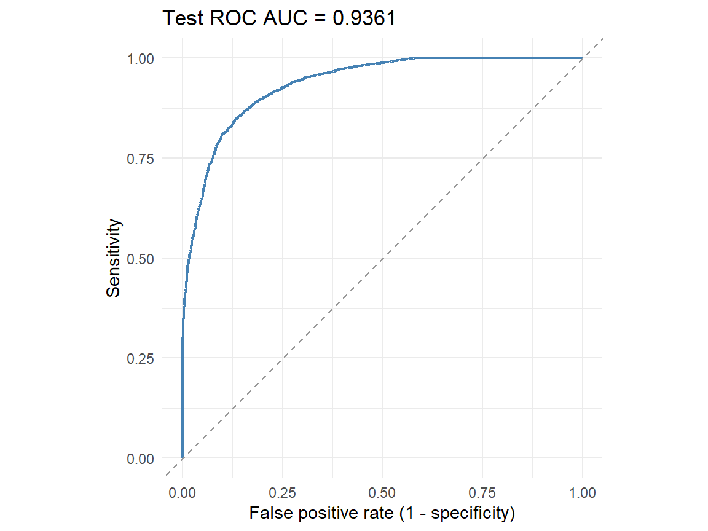
The ROC curve illustrates the Siamese network’s ability to distinguish same-writer from different-writer pairs across different classification thresholds. The curve’s position towards the upper-left corner indicates strong discrimination, with high sensitivity and relatively low false positive rates. This suggests that the model learned useful handwriting representations for verifying previously unseen writers.
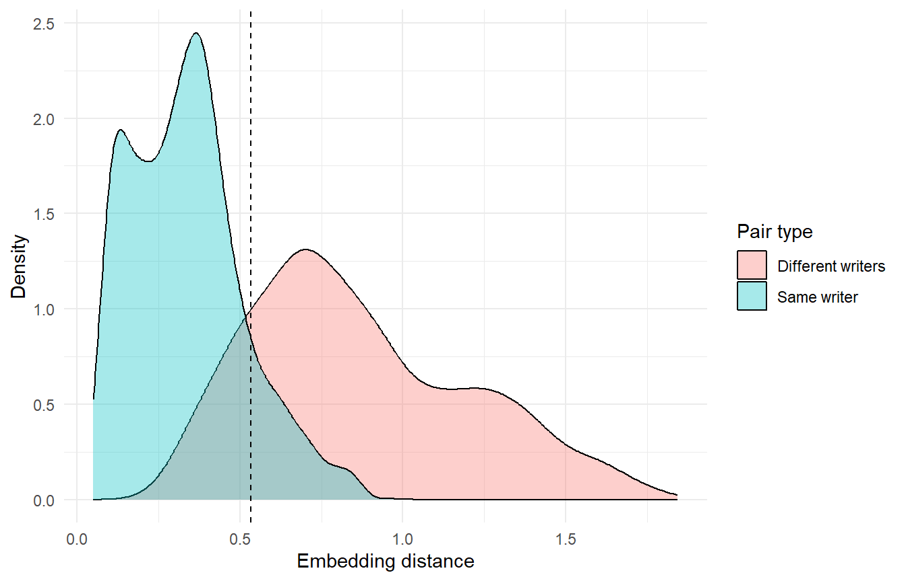
The embedding-distance distributions illustrate how the Siamese network distinguishes same-writer from different-writer pairs. Same-writer pairs generally have smaller distances, while different-writer pairs have larger distances. The dashed line represents the matching threshold selected using validation data, with pairs to the left classified as same-writer. The overlap between the distributions indicates that some pairs may be incorrectly classified, showing that the model does not achieve perfect separation.
9.4 Matching results by digit and session
All pairs in this experiment were generated with same_digit = TRUE, so this is same-digit verification, not a test of matching two different digits. Accuracy by digit is therefore conditional on the particular threshold and test-pair sampling.
| digit_a | n_pairs | accuracy | auc |
|---|---|---|---|
| 0 | 1211 | 0.9257 | 0.9866 |
| 1 | 1221 | 0.8460 | 0.8965 |
| 2 | 1162 | 0.8804 | 0.9752 |
| 3 | 1192 | 0.8935 | 0.9663 |
| 4 | 1214 | 0.7348 | 0.8766 |
The Siamese network’s matching performance varied across handwritten digits. Digit 0 achieved the highest AUC (0.9866) and accuracy (92.57%), indicating the strongest writer discrimination among the five digits. Digit 4 had the lowest AUC (0.8766) and accuracy (73.48%), suggesting greater difficulty distinguishing writers using this digit. Digit 1 also showed relatively lower performance (AUC = 0.8965), while digits 2 and 3 achieved high AUC values of 0.9752 and 0.9663, respectively. These findings suggest that the amount of writer-identifying information captured by the network differs across digits. However, the observed differences may also reflect the model’s learned representations and the sampled test pairs, rather than inherent differences in the digits themselves.
| session_relation | pair_type | n_pairs | accuracy | mean_distance |
|---|---|---|---|---|
| Different sessions | Different writers | 2394 | 0.8450 | 0.8719 |
| Different sessions | Same writer | 2437 | 0.8445 | 0.3848 |
| Same session | Different writers | 606 | 0.8086 | 0.8530 |
| Same session | Same writer | 563 | 1.0000 | 0.1232 |
The results show that recording-session differences are associated with reduced same-writer matching performance. Sensitivity decreased from 100% for same-session pairs to 84.45% for different-session pairs, while the mean embedding distance increased from 0.1232 to 0.3848. This indicates that the network found handwriting samples from the same writer less similar when they came from different recording sessions. Specificity was 80.86% for same-session pairs and 84.50% for different-session pairs, showing a smaller difference in the model’s ability to distinguish different writers. Overall, session variation was associated with a greater reduction in same-writer recognition than in different-writer discrimination.
9.5 Generalisation, possible leakage, and limitations
For the Siamese experiment, the 20 writers were split into 14 training writers, three validation writers and three test writers before pair generation. No writer appears in more than one split, so the test evaluates whether the learned distance representation can verify previously unseen writers. Validation pairs determine the network configuration and cutoff; test pairs are used only for final evaluation. This reduces writer-level leakage and avoids choosing a favourable cutoff after seeing the test labels.
The individual images can appear in more than one pair within a split, so pair observations are not statistically independent. Only three unseen test writers were evaluated, and the outcomes depend on the balanced, same-digit pair-generation procedure. A single writer partition and one random training seed per candidate also limit conclusions about the stability of model selection. Finally, the simulated images are not necessarily representative of real handwriting.
10 Comparison of CNN and Siamese Network Performance
10.0.1 Overall Model Performance
The CNN and Siamese networks were developed to investigate two related but different tasks: writer identification and writer verification. The CNN aimed to identify the writer of a handwritten digit among 20 known writers, while the Siamese network aimed to determine whether two handwriting samples belonged to the same writer.
The selected CNN (Model 3) achieved a validation accuracy of 61.00% and a test accuracy of 54.74% on the held-out recording session. Its top-3 test accuracy was 86.22%, indicating that the correct writer was frequently among the three highest-scoring predictions, even when the model’s first prediction was incorrect.
In comparison, the selected Siamese Baseline achieved a validation ROC AUC of approximately 0.982 and a test ROC AUC of 0.936 on previously unseen writers. Its test accuracy was 85.60%, with an Equal Error Rate (EER) of 14.30%, sensitivity of 87.40% and specificity of 83.80%. These results indicate that the Siamese network learned useful similarity representations for distinguishing same-writer and different-writer handwriting pairs.
Although the Siamese network achieved a higher numerical test accuracy, this does not necessarily mean it performed better than the CNN. The CNN performs multiclass classification among 20 writers, whereas the Siamese network performs binary verification on balanced pairs of samples. Therefore, their accuracy values cannot be compared directly to determine which model is superior.
10.0.2 Performance Across Digits
Both models showed differences in performance across handwritten digits. For the CNN, digit 1 achieved the highest identification accuracy of 64.10%, while digit 0 had the lowest accuracy of 45.20%. In contrast, the Siamese network achieved its highest verification accuracy on digit 0 (92.60%), with a corresponding ROC AUC of 0.987, while digit 4 produced the lowest verification accuracy of 73.50% and ROC AUC of 0.877.
These findings suggest that the handwriting features useful for identifying known writers may differ from those useful for determining whether two samples belong to the same writer. However, differences in the training objectives and test partitions may also contribute to the contrasting digit-level results.
10.0.3 Generalisation Across Writers and Recording Sessions
The CNN was trained using Sessions 1–3, validated on Session 4 and tested on Session 5. This strategy evaluated whether the model could identify previously observed writers under different recording conditions. Performance varied considerably across writers, with Writers 11 and 18 achieving 100% accuracy, while Writers 5 and 13 achieved 0%. This suggests that some writers possessed more easily distinguishable handwriting characteristics, while others were frequently confused with different writers.
In contrast, the Siamese network was trained using 14 writers, validated using three writers and tested using three previously unseen writers. This evaluated whether the model could generalise its learned similarity representations to new individuals. Same-writer verification accuracy decreased from 100% for pairs within the same recording session to 84.45% for pairs from different sessions. The mean embedding distance also increased from 0.123 to 0.385, indicating that handwriting variation across sessions made matching more challenging.
10.0.4 Overall Interpretation
Both models demonstrated an ability to learn writer-related information from the simulated handwriting dataset, but their strengths were associated with different objectives. The CNN provided direct identification among known writers, although its performance varied across writers and recording sessions. The Siamese network demonstrated strong verification performance on previously unseen writers, but its accuracy was affected by digit identity and session variation.
The CNN is therefore more appropriate for identifying writers from a fixed set of known individuals, while the Siamese approach is more suitable for verifying whether handwriting samples belong to the same individual, including writers not encountered during training. Nevertheless, the models cannot be ranked directly because of differences in their prediction tasks and evaluation strategies. The use of simulated handwriting and the small number of unseen writers in the Siamese test set also limit generalisation to real-world handwriting recognition.
11 Conclusion
This project investigated the use of CNN and Siamese neural networks for writer recognition using 25,000 simulated handwritten digit images from 20 writers. Exploratory analysis revealed variations in handwriting across writers, digits and recording sessions.
The CNN achieved a test accuracy of 54.74% and a top-3 accuracy of 86.22% when identifying known writers from an unseen recording session. The Siamese network achieved a test accuracy of 85.60% and ROC AUC of 0.936 when verifying previously unseen writers. However, both models showed performance differences across digits and recording sessions.
Overall, both approaches demonstrated the ability to learn writer-specific handwriting characteristics. The CNN was suited to identifying known writers, while the Siamese network was more suitable for verifying unseen writers. However, their results are not directly comparable because they address different tasks. The simulated dataset and limited number of unseen writers also restrict generalisability. Future work could explore larger datasets and improved models to enhance recognition performance.
12 AI use statement
ChatGPT was used during this project to assist with understanding neural-network concepts, discussing train-validation-test strategies, debugging and restructuring R/Keras code, and refining explanations of the CNN and Siamese modelling approaches. It was also used to suggest ways of organising the hyperparameter analysis and interpreting evaluation measures.
AI-generated material was not included without review. All code was run by the group, outputs were checked against the actual dataset and model results, and numerical results reported in the final submission were taken from our own executions rather than generated by AI. Explanatory text suggested by the tool was edited and rewritten to reflect our own understanding and the specific results obtained in this analysis.
ChatGPT was also used for guidance on Git/GitHub workflows, including branches, commits and pull requests. Final modelling decisions, interpretations and report content were reviewed by the group.
13 Plagiarism declaration
We declare that this report is our own work. All external sources have been appropriately acknowledged, and the use of generative AI tools has been disclosed in the AI Use Statement. All analyses and reported numerical results were produced from the supplied dataset using the code contained in our project repository. We understand the methods, code and interpretations presented in this report and are able to reproduce and explain them.